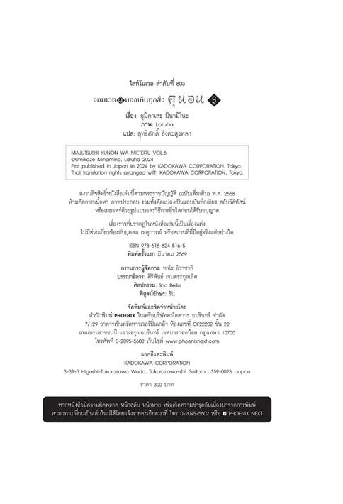
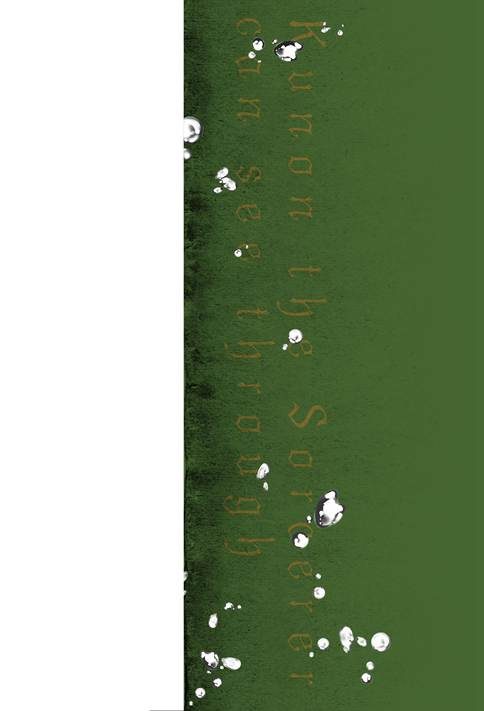
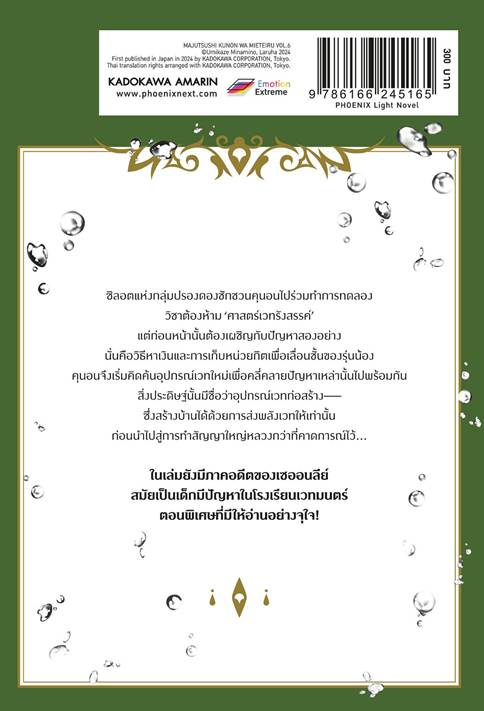

สวัสดี ฉันอุมิคาเสะ มินามิโนะ
จอมเวทผู้มองเห็นทุกสิ่ง คุนอน เล่มหกวางแผงพร้อมสายลมอ่อนโยนช่วงปลายฤดูร้อน แต่ระหว่างที่เขียนเรื่องนี้อยู่ไม่ใช่ฤดูร้อน ไม่ใช่ร้อนธรรมดา แต่ร้อนอบอ้าวด้วย
ในที่สุดก็มาถึงเล่มหก เมื่อเป็นเล่มหกก็แปลว่าผ่านการสั่งสมมาห้าเล่มแล้ว การสั่งสมเป็นสิ่งสำคัญ เรื่องที่โด่งดังเกินร้อยเล่มอย่างโคจิคาเมะตำรวจป้อมยาม วันพีซ หรือโคนัน ก็เคยผ่านเล่มหกมาก่อน ผ่านมาแบบไม่มีข้อยกเว้น หนังสือเล่มนี้เดินทางมาถึงจุดผ่านนั่นแล้ว เป็นยังไงบ้าง พอคิดแบบนั้น ซีรีส์นี้ก็อาจจะเหมือนกับเรื่องเหล่านั้นตอนออกมาหกเล่มก็ได้ จะเหมือนหรือไม่ขอเชิญทุกคนพิจารณากันเอาเอง แต่ขอพูดอีกครั้ง เรื่องนี้เดินทางมาถึงเล่มหกเช่นเดียวกับที่เรื่องดังๆ เหล่านั้นเคยผ่านมาแล้ว ใช่รึเปล่า คงใช่แหละเนอะ
ฉันเขียนปัจฉิมลิขิตนี้ตอนปลายเดือนพฤษภาคม 2024
อันที่จริงฉันเขียนต้นฉบับเล่มหกควบคู่ไปกับต้นฉบับเรื่องอื่น กำหนดการทับซ้อนกันพอดี เรียกว่าทับซ้อนกันเป๊ะเลย
อีกทั้งเล่มนี้และอีกเล่มยังมีตอนพิเศษที่ยาวมากด้วย ถึงจะอ้างอิงจากเวอร์ชันในเว็บ แต่ครึ่งหนึ่งก็ถูกเขียนขึ้นใหม่สำหรับทั้งสองเล่มเลย
เป็นเดือนเมษายนที่งานยุ่งจริงๆ
ตอนที่รู้กำหนดการ ฉันเกือบร้องไห้แน่ะ แทบจะต้องเขียนต้นฉบับทั้งน้ำตา ยิ่งไปกว่านั้นยังต้องเขียนเรื่องคุนอนเวอร์ชันสำหรับลงในเว็บอีก เล่นเอาร้องไห้ฟูมฟายเลยละ
เพราะอย่างนั้นจึงแทบไม่ได้แตะเกม แค่ทำกิจวัตรในเกมมือถือเท่านั้น
Unicorn Overlord ที่เล่นไปได้นิดเดียวก็ค้างคาใจมาก ต้องหยุดเล่นไว้แค่ตอนที่เด็กผู้หญิงถูกลักพาตัวในช่วงต้นเกม
แล้วฉันไม่ค่อยได้ดูเกมใหม่ๆ ด้วย ระหว่างนั้นจึงไม่ได้ซื้อ มีเกมอะไรใหม่ๆ ออกมาบ้างนะ คาใจจัง
แต่ในช่วงที่งานยุ่งแบบนี้ก็ยังซื้อ PS5 ที่อยากได้มานาน! ถึงจะยังไม่ได้เปิดกล่องก็เถอะ! คงเป็นการหนีความจริงในแบบของฉัน! แต่ก็ไม่ได้เปิดกล่องเสียที!
เอาเป็นว่าเล่มหกคือผลงานจากความตรากตรำของฉัน
หวังว่าจะสนุกสนานกันนะ
ขอเปลี่ยนเรื่องหน่อย ฉันไม่ได้ซื้อหอยเชลล์
ในปัจฉิมลิขิตเล่มก่อน ฉันบอกไว้ว่า ‘ฤดูหนาวนี้อาจซื้อหอยเชลล์!’ แต่สุดท้ายก็ไม่ได้ซื้อ
เปลี่ยนไปซื้อกุ้งแช่แข็งแทน
ค่อนข้างสะดวกทีเดียว น่าพอใจอย่างยิ่ง กินกับอะไรก็อร่อย ทำให้คิดว่าเดี๋ยวนี้กินกุ้งดีกว่า แน่นอนว่าฉันเอาไปใส่ในสปาเกตตีซอสมะเขือเทศด้วย!
ขอบคุณอาจารย์ Laruha สำหรับภาพประกอบแสนสวย
เชื่อว่าตอนอ่านทุกคนน่าจะอยากรู้กันใช่ไหม
ฉันเองก็อยากรู้เหมือนกัน อยากรู้ว่าจะเป็นยังไง
ในที่สุดก็วาดภาพไอออนออกมาให้เห็นแล้ว
แจ๋วเลย เจ๋งจริงๆ
เธอโดนเซออนลีย์ปั่นหัว มีเรื่องราวหลายอย่างเกิดขึ้น แถมยังอยู่ในยุคของคุนอนด้วย
ได้เห็นไอออนในอดีตแล้ว อยากรู้จังว่าในยุคปัจจุบันเธอจะเป็นยังไง
ฉันนี่ตั้งตารอยิ่งกว่าใครเลยทีเดียว
ขอบคุณอาจารย์ La-na ผู้เขียนฉบับการ์ตูนลงในนิตยสารรายเดือน Comic Alive ขอบคุณที่เขียนการ์ตูนสนุกๆ ให้อ่านอยู่เสมอ
ช่วงที่เขียนปัจฉิมลิขิตอยู่นี้ การ์ตูนเล่มสี่ออกวางแผงแล้ว เอ๊ะ? ไม่รู้ว่าการ์ตูนออกแล้วเหรอ ลองเช็กในแอมะซอนดูนะ!
ตรงปัจฉิมลิขิตของการ์ตูน อาจารย์แสดงรสนิยมอย่างโจ่งแจ้งให้ทราบด้วย เป็นเรื่องใหญ่ที่ติดอยู่ในใจฉันเลย ฉันแอบคาใจเล็กน้อยอยู่แล้วว่าอาจารย์ชอบใคร แล้วก็รู้สึกผิดคาดว่า ‘คนนั้นหรอกเหรอ!’
เพียงแต่เขาหรือไม่ก็เธอน่ารักแหละ ถึงจะชอบก็ช่วยไม่ได้ คนบางประเภทก็ดึงดูดใจบางคนอย่างห้ามไม่ได้ หรือเลี่ยงไม่ได้ที่จะมีเสน่ห์ให้หลงใหล ความน่ารักคงมีอำนาจลี้ลับที่ยั่วยวนจิตใจคนได้ประมาณนั้น
ความน่ารักคือความถูกต้อง
ความน่ารักคือความถูกต้อง!
ความน่ารักคือรายการอนิเมะตอนแปดโมงเช้าวันอาทิตย์!
แล้วก็วาดรูปให้หน้าปกนิตยสารรายเดือน Comic Alive ฉบับเดือนมิถุนายน 2024 ด้วย ลองไปหามาดูกันนะ!
ขอบคุณคุณ O บรรณาธิการที่ดูแลและช่วยเหลือกันเช่นเคย
คราวนี้จำเป็นต้องเขียนตอนพิเศษเยอะกว่าที่ผ่านมา จึงน่าหวั่นใจเอาการ
ฉันเป็นกังวลอยู่เสมอว่า ‘ถ้าเขียนไม่ได้จะทำยังไงดี’ แต่คุณบรรณาธิการคงกังวลยิ่งกว่าฉัน
ค่อยยังชั่ว โชคดีจริงๆ สำหรับทั้งสองฝ่าย
ถ้าต้นฉบับไม่พอคงจะเป็นเรื่องคอขาดบาดตายทีเดียว
ในขณะที่ฉันซึ่งกำลังเขียนปัจฉิมลิขิตเล่มนี้อยู่ก็รู้สึกโล่งอก
ขอคุยอะไรสนุกๆ บ้างดีกว่า
ในช่วงสั้นๆ ที่ปราศจากกำหนดส่งงาน...
ฉันจะไปช่วยเด็กผู้หญิงที่ถูกลักพาตัวใน Unicorn Overlord...
สุดท้ายถึงผู้อ่านทุกท่าน
ที่ช่วยทำให้เรื่องนี้เดินทางมาถึงเล่มหก
น่ายินดีที่มีฉบับภาษาต่างประเทศด้วย มีความเป็นไปได้ว่าดาราฮอลลีวูดกำลังอ่านเรื่องนี้อยู่ เหลือเชื่อเลยเนอะ
คนที่เคยอ่านเวอร์ชันในเว็บมาแล้วน่าจะรู้ ยังมีเรื่องที่อยากเขียนเป็นหนังสืออีกมากมาย ทั้งฉากต่างๆ สตรีศักดิ์สิทธิ์ในแบบต่างๆ และตัวละครต่างๆ
ฝากติดตามต่อไปด้วยนะ
ไว้พบกันใหม่เล่มเจ็ดที่ได้ออกแน่ๆ!


